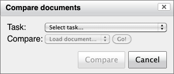
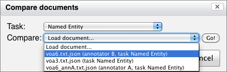
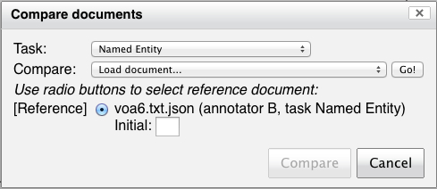
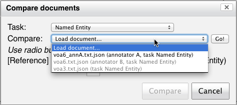
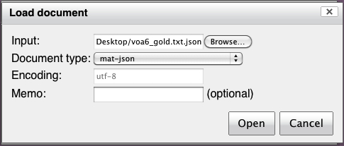
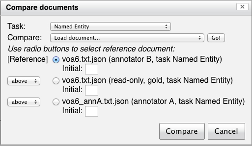
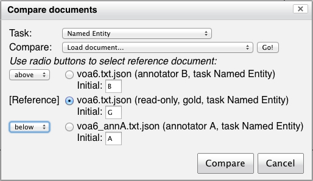
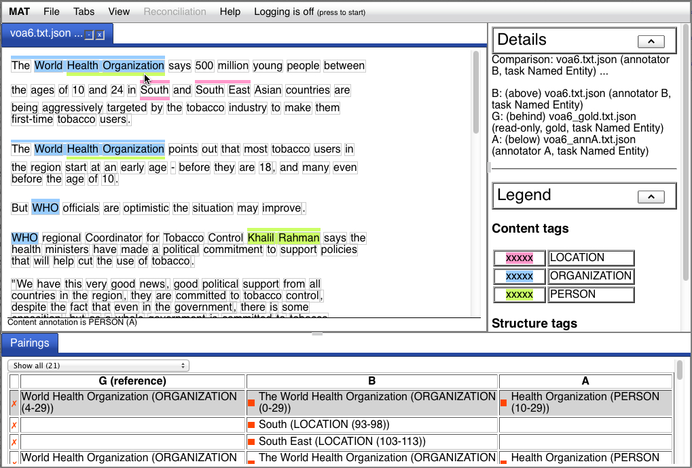

MAT provides a facility for comparing
documents using the same
algorithm the scorer uses. Documents may be compared if they
have the identical underlying signal. (It only makes sense to
compare documents which have been annotated using the same task,
but MAT doesn't necessarily know which task was used to annotate a
document, so it only enforces the signal condition - it's up to
the user to enforce the task condition.)
Document comparison works for all annotation set descriptors
which can be compared using the scorer's pairing algorithm,
including spanless annotations and annotations with complex
attribute structure.
From the file menu, select "Compare files...". You'll be
presented with a modal dialog that looks like this:

From this dialog, you must first select a task. Once you do,
you'll be able to make a selection from the "Compare:" menu. This
menu contains a list of all the available documents which have
been loaded with the selected task (including workspace
documents), plus an option to "Load document...". Select an
element and press the "Go!" button, and the document will be
listed:


Once the first document is selected, only documents with a
matching underlying signal which haven't been selected previously
will be available for selection:

The "Load document..." option will place another modal dialog at
the front which allows you to select a document in the usual way.
Once you open this document, it too will be listed in the "Align
documents" dialog:

The elements in the "Compare documents" document list can be reordered. You can
select as many documents as you like. Once at least two documents
have been selected, the "Compare" button will be enabled.

Before you press the "Compare" button, you might want to
customize the comparison presentation.
You have a number of options available to you for your comparison
presentation. You can choose where the annotations for a given
document will be shown (above, behind, or below the text) and
whether to associate a mnemonic initial with a given document.
To the left of each entry in the "Align documents" dialog you'll
see either "[Reference]", or a menu with the values "above" and
"below". The reference can be selected by clicking the radio
button, as instructed; the reference document is always placed
behind the text. The menus can be used to place the remaining
documents either above or below the text; the document annotations
for those documents will be stacked in the order in which the
documents are listed.
Below each entry is a place to enter an mnemonic initial, in the
"Initial:" field. This initial will appear in the list of
documents at the head of the alignment display, and also in the
annotation description at the bottom of the alignment display when
you hover your mouse over the annotation. If no initial is
provided, a number will be assigned.

Now, press the "Compare" button. Your window will look like this:

Note that the documents are listed in the panel on the right, with their initials and positions, and that the mouse in this example is hovering over one of the annotations from the document corresponding to annotator A.
Each pairing among annotations is described in the table in the "Pairings" tab at the bottom. The reference document is in the first document column; all other columns show the documents which are being paired with the reference. At the beginning of each line, a box indicates whether the pairing is a perfect pairing or not; in order to be a perfect pairing, all the annotations in all the non-reference document must match the reference document exactly. In each non-reference column, an icon indicates whether the element in that cell matches the reference in that row (green for match, red for mismatch). If one of the documents doesn't have an element which matches the reference, the cell will be blank.You can also click on an annotation in the pairings table to
access a popup menu which allows you to scroll to that annotation.
Finally, immediately above the pairings table in the pairings
detail tab, there's a menu which allows you to filter the pairings
table. You can filter on matched vs. nonmatched, spanned vs.
spanless, or on individual labels.
The comparison display works identically in the case of spanless
annotations. The spanless pairs will be listed in the table along
with the spanned pairs, and highlighting and scrolling work
straightforwardly as well.